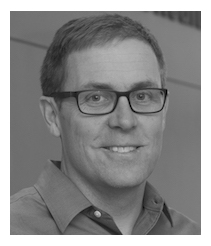
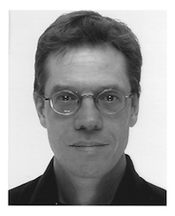

For further information, please e-mail skboyd@ucalgary.ca
Numerics88 Solutions is based at the Bone Imaging Laboratory located in Calgary, Alberta, Canada.
People
Steven Boyd

Steve is a professor at the Cumming School of Medicine in the Department of Radiology at the University of Calgary, and holds a joint position at the Schulich School of Engineering and Faculty of Kinesiology. He is the Bob and Nola Rintoul Chair in Bone and Joint Research and the McCaig Chair in Bone and Joint Health. In 2016 he was appointed the director of the McCaig Institute for Bone and Joint Health. The focal point for his research is in the Bone Imaging Laboratory, established in 2004. His research focuses on using novel imaging technologies and analysis methods to develop methods for better diagnosis and monitoring of diseases such as osteoporosis and osteoarthritis.
Eric Nodwell

Whatever Eric is currently working on, you can be sure it is at the intersection of science, math and computers. Prior to Numerics88, he has been involved with are a diagnostic system for identifying defaults in large power generators based on the analysis of their magnetic field, software for the reconstruction of huge data sets of CT data obtained at synchrotron facilities, and an automated control system for molecular beam epitaxy, used for semiconductor crystal growth. Eric worked at one of the companies that pioneered the use of graphics cards for numeric calculations (Acceleware). Eric has a MSc in applied physics and an BSc in mathematics and physics.